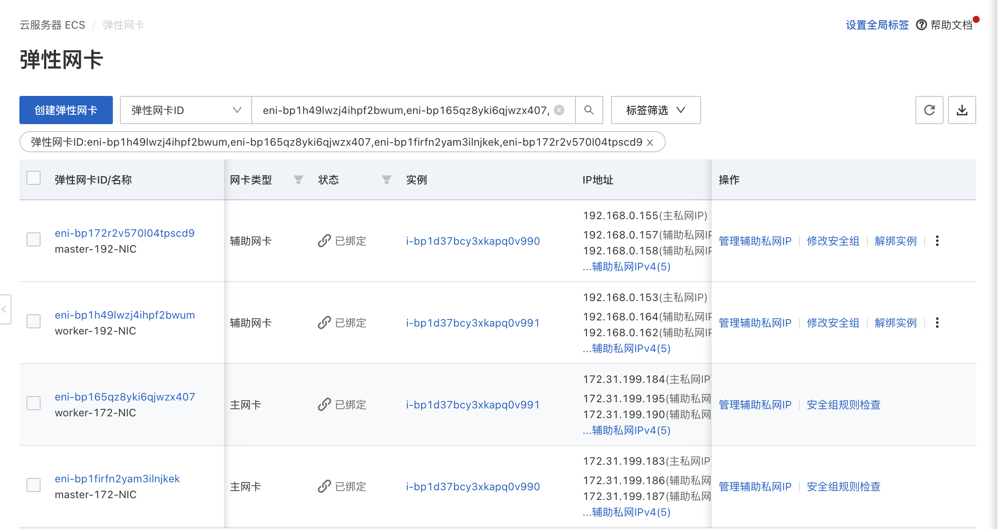
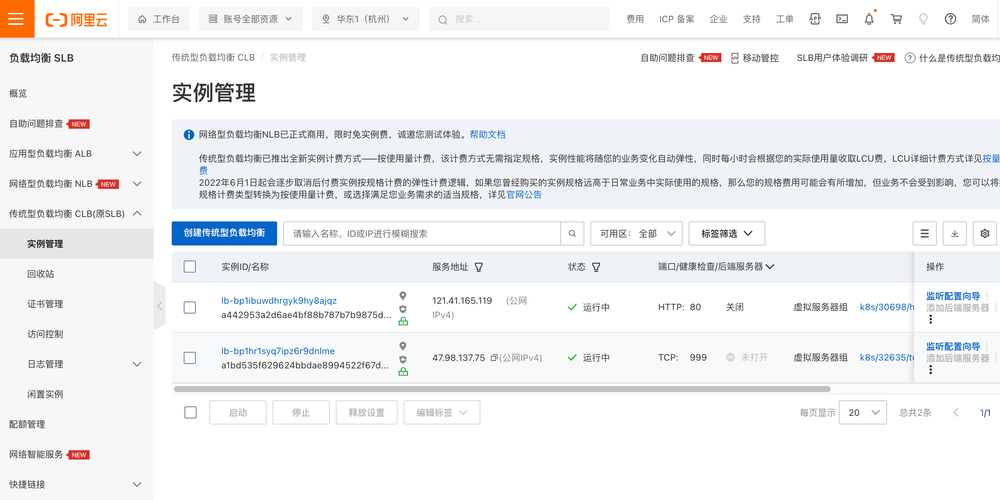

Running On Alibaba Cloud
English | 简体中文
Introduction
With a multitude of public cloud providers available, such as Alibaba Cloud, Huawei Cloud, Tencent Cloud, AWS, and more, it can be challenging to use mainstream open-source CNI plugins to operate on these platforms using Underlay networks. Instead, one has to rely on proprietary CNI plugins provided by each cloud vendor, leading to a lack of standardized Underlay solutions for public clouds. This page introduces Spiderpool, an Underlay networking solution designed to work seamlessly in any public cloud environment. A unified CNI solution offers easier management across multiple clouds, particularly in hybrid cloud scenarios.
Features
Spiderpool offers features such as node topology, MAC address validation, and integration with services that use spec.externalTrafficPolicy set to Local mode. Spiderpool can run on public cloud environments using the IPVlan Underlay CNI. Here's an overview of its implementation:
-
When using Underlay networks in a public cloud environment, each network interface of a cloud server can only be assigned a limited number of IP addresses. To enable communication when an application runs on a specific cloud server, it needs to obtain the valid IP addresses allocated to different network interfaces within the VPC network. To address this IP allocation requirement, Spiderpool introduces a CRD named
SpiderIPPool. By configuring the nodeName and multusName fields inSpiderIPPool, it enables node topology functionality. Spiderpool leverages the affinity between the IP pool and nodes, as well as the affinity between the IP pool and IPvlan Multus, facilitating the utilization and management of available IP addresses on the nodes. This ensures that applications are assigned valid IP addresses, enabling seamless communication within the VPC network, including communication between Pods and also between Pods and cloud servers. -
In a public cloud VPC network, network security controls and packet forwarding principles dictate that when network data packets contain MAC and IP addresses unknown to the VPC network, correct forwarding becomes unattainable. This issue arises in scenarios where Macvlan or OVS based Underlay CNI plugins generate new MAC addresses for Pod NICs, resulting in communication failures among Pods. To address this challenge, Spiderpool offers a solution in conjunction with IPVlan CNI. The IPVlan CNI operates at the L3 of the network, eliminating the reliance on L2 broadcasts and avoiding the generation of new MAC addresses. Instead, it maintains consistency with the parent interface. By incorporating IPVlan, the legitimacy of MAC addresses in a public cloud environment can be effectively resolved.
-
When the
.spec.externalTrafficPolicyof a service is set toLocal, the client's source IP can be reserved. However, in self-managed public cloud clusters, using the platform's LoadBalancer component for nodePort forwarding in this mode will lead to access failures. To tackle this problem, Spiderpool offers the coordinator plugin. This plugin utilizes iptables to apply packet marking, ensuring that response packets coming from veth0 are still forwarded through veth0. This resolves the problem of nodePort access in this mode.
Prerequisites
-
The system kernel version must be greater than 4.2 when using IPVlan as the cluster's CNI.
-
Helm is installed.
Steps
Alibaba Cloud Environment
-
Prepare an Alibaba Cloud environment with virtual machines that have 2 network interfaces. Assign a set of auxiliary private IP addresses to each network interface, as shown in the picture:

-
Utilize the configured VMs to build a Kubernetes cluster. The available IP addresses for the nodes and the network topology of the cluster are depicted below:

Install Spiderpool
Install Spiderpool via helm:
helm repo add spiderpool https://spidernet-io.github.io/spiderpool
helm repo update spiderpool
helm install spiderpool spiderpool/spiderpool --namespace kube-system --set ipam.enableStatefulSet=false --set multus.multusCNI.defaultCniCRName="ipvlan-eth0"
If you are using a cloud server from a Chinese mainland cloud provider, you can enhance image pulling speed by specifying the parameter
--set global.imageRegistryOverride=ghcr.m.daocloud.io.Spiderpool allows for fixed IP addresses for application replicas with a controller type of
StatefulSet. However, in the underlay network scenario of public clouds, cloud instances are limited to using specific IP addresses. When StatefulSet replicas migrate to different nodes, the original fixed IP becomes invalid and unavailable on the new node, causing network unavailability for the new Pods. To address this issue, setipam.enableStatefulSettofalseto disable this feature.Specify the Multus clusterNetwork for the cluster using
multus.multusCNI.defaultCniCRName.clusterNetworkis a specific field within the Multus plugin used to define the default network interface for Pods.
Install CNI
To simplify the creation of JSON-formatted Multus CNI configurations, Spiderpool offers the SpiderMultusConfig CR to automatically manage Multus NetworkAttachmentDefinition CRs. Here is an example of creating an IPvlan SpiderMultusConfig configuration:
IPVLAN_MASTER_INTERFACE0="eth0"
IPVLAN_MULTUS_NAME0="ipvlan-$IPVLAN_MASTER_INTERFACE0"
IPVLAN_MASTER_INTERFACE1="eth1"
IPVLAN_MULTUS_NAME1="ipvlan-$IPVLAN_MASTER_INTERFACE1"
cat <<EOF | kubectl apply -f -
apiVersion: spiderpool.spidernet.io/v2beta1
kind: SpiderMultusConfig
metadata:
name: ${IPVLAN_MULTUS_NAME0}
namespace: kube-system
spec:
cniType: ipvlan
coordinator:
mode: underlay
tunePodRoutes: true
podCIDRType: cluster
enableCoordinator: true
ipvlan:
master:
- ${IPVLAN_MASTER_INTERFACE0}
---
apiVersion: spiderpool.spidernet.io/v2beta1
kind: SpiderMultusConfig
metadata:
name: ${IPVLAN_MULTUS_NAME1}
namespace: kube-system
spec:
cniType: ipvlan
coordinator:
mode: underlay
tunePodRoutes: true
podCIDRType: cluster
enableCoordinator: true
ipvlan:
master:
- ${IPVLAN_MASTER_INTERFACE1}
EOF
This case uses the given configuration to create two IPvlan SpiderMultusConfig instances. These instances will automatically generate corresponding Multus NetworkAttachmentDefinition CRs for the host's eth0 and eth1 network interfaces.
~# kubectl get spidermultusconfigs.spiderpool.spidernet.io -n kube-system
NAME AGE
ipvlan-eth0 10m
ipvlan-eth1 10m
~# kubectl get network-attachment-definitions.k8s.cni.cncf.io -n kube-system
NAME AGE
ipvlan-eth0 10m
ipvlan-eth1 10m
Create IPPools
The Spiderpool's CRD, SpiderIPPool, introduces the following fields: nodeName, multusName, and ips:
-
nodeName: whennodeNameis not empty, Pods are scheduled on a specific node and attempt to acquire an IP address from the corresponding SpiderIPPool. If the Pod's node matches the specifiednodeName, it successfully obtains an IP. Otherwise, it cannot obtain an IP from that SpiderIPPool. WhennodeNameis empty, Spiderpool does not impose any allocation restrictions on the Pod. -
multusName：Spiderpool integrates with Multus CNI to cope with cases involving multiple network interface cards. WhenmultusNameis not empty, SpiderIPPool utilizes the corresponding Multus CR instance to configure the network for the Pod. If the Multus CR specified bymultusNamedoes not exist, Spiderpool cannot assign a Multus CR to the Pod. WhenmultusNameis empty, Spiderpool does not impose any restrictions on the Multus CR used by the Pod. -
spec.ips：this field must not be empty. Due to Alibaba Cloud's limitations on available IP addresses for nodes, the specified range of values must fall within the auxiliary private IP range of the host associated with the specifiednodeName. You can obtain this information from the Elastic Network Interface page in the Alibaba Cloud console.
Based on the provided information, use the following YAML configuration to create a SpiderIPPool for each network interface (eth0 and eth1) on every node. These SpiderIPPools will assign IP addresses to Pods running on different nodes.
~# cat <<EOF | kubectl apply -f -
apiVersion: spiderpool.spidernet.io/v2beta1
kind: SpiderIPPool
metadata:
name: master-172
spec:
default: true
ips:
- 172.31.199.185-172.31.199.189
subnet: 172.31.192.0/20
gateway: 172.31.207.253
nodeName:
- master
multusName:
- kube-system/ipvlan-eth0
---
apiVersion: spiderpool.spidernet.io/v2beta1
kind: SpiderIPPool
metadata:
name: master-192
spec:
default: true
ips:
- 192.168.0.156-192.168.0.160
subnet: 192.168.0.0/24
gateway: 192.168.0.253
nodeName:
- master
multusName:
- kube-system/ipvlan-eth1
---
apiVersion: spiderpool.spidernet.io/v2beta1
kind: SpiderIPPool
metadata:
name: worker-172
spec:
default: true
ips:
- 172.31.199.190-172.31.199.194
subnet: 172.31.192.0/20
gateway: 172.31.207.253
nodeName:
- worker
multusName:
- kube-system/ipvlan-eth0
---
apiVersion: spiderpool.spidernet.io/v2beta1
kind: SpiderIPPool
metadata:
name: worker-192
spec:
default: true
ips:
- 192.168.0.161-192.168.0.165
subnet: 192.168.0.0/24
gateway: 192.168.0.253
nodeName:
- worker
multusName:
- kube-system/ipvlan-eth1
EOF
Create Applications
In the following example YAML, there are 2 sets of DaemonSet applications and 1 service with a type of ClusterIP:
v1.multus-cni.io/default-network: specify the subnet that each application will use. In the example, the applications are assigned different subnets.
cat <<EOF | kubectl create -f -
apiVersion: apps/v1
kind: DaemonSet
metadata:
labels:
app: test-app-1
name: test-app-1
namespace: default
spec:
selector:
matchLabels:
app: test-app-1
template:
metadata:
labels:
app: test-app-1
annotations:
v1.multus-cni.io/default-network: kube-system/ipvlan-eth0
spec:
containers:
- image: busybox
command: ["sleep", "3600"]
imagePullPolicy: IfNotPresent
name: test-app-1
ports:
- name: http
containerPort: 80
protocol: TCP
---
apiVersion: apps/v1
kind: DaemonSet
metadata:
labels:
app: test-app-2
name: test-app-2
namespace: default
spec:
selector:
matchLabels:
app: test-app-2
template:
metadata:
labels:
app: test-app-2
annotations:
v1.multus-cni.io/default-network: kube-system/ipvlan-eth1
spec:
containers:
- image: nginx
imagePullPolicy: IfNotPresent
name: test-app-2
ports:
- name: http
containerPort: 80
protocol: TCP
---
apiVersion: v1
kind: Service
metadata:
name: test-svc
labels:
app: test-app-2
spec:
type: ClusterIP
ports:
- port: 80
protocol: TCP
targetPort: 80
selector:
app: test-app-2
EOF
Check the status of the running Pods:
~# kubectl get po -owide
NAME READY STATUS RESTARTS AGE IP NODE NOMINATED NODE READINESS GATES
test-app-1-b7765b8d8-422sb 1/1 Running 0 16s 172.31.199.187 master <none> <none>
test-app-1-b7765b8d8-qjgpj 1/1 Running 0 16s 172.31.199.193 worker <none> <none>
test-app-2-7c56876fc6-7brhf 1/1 Running 0 12s 192.168.0.160 master <none> <none>
test-app-2-7c56876fc6-zlxxt 1/1 Running 0 12s 192.168.0.161 worker <none> <none>
Spiderpool automatically assigns IP addresses to the applications, ensuring that the assigned IPs are within the expected IP pool.
~# kubectl get spiderippool
NAME VERSION SUBNET ALLOCATED-IP-COUNT TOTAL-IP-COUNT DEFAULT
master-172 4 172.31.192.0/20 1 5 true
master-192 4 192.168.0.0/24 1 5 true
worker-172 4 172.31.192.0/20 1 5 true
worker-192 4 192.168.0.0/24 1 5 true
Test East-West Connectivity
-
Test communication between Pods and their hosts:
~# kubectl get nodes -owide NAME STATUS ROLES AGE VERSION INTERNAL-IP EXTERNAL-IP OS-IMAGE KERNEL-VERSION CONTAINER-RUNTIME master Ready control-plane 2d12h v1.27.3 172.31.199.183 <none> CentOS Linux 7 (Core) 6.4.0-1.el7.elrepo.x86_64 containerd://1.7.1 worker Ready <none> 2d12h v1.27.3 172.31.199.184 <none> CentOS Linux 7 (Core) 6.4.0-1.el7.elrepo.x86_64 containerd://1.7.1 ~# kubectl exec -ti test-app-1-b7765b8d8-422sb -- ping 172.31.199.183 -c 2 PING 172.31.199.183 (172.31.199.183): 56 data bytes 64 bytes from 172.31.199.183: seq=0 ttl=64 time=0.088 ms 64 bytes from 172.31.199.183: seq=1 ttl=64 time=0.054 ms --- 172.31.199.183 ping statistics --- 2 packets transmitted, 2 packets received, 0% packet loss round-trip min/avg/max = 0.054/0.071/0.088 ms -
Test communication between Pods across different nodes and subnets:
~# kubectl exec -ti test-app-1-b7765b8d8-422sb -- ping 172.31.199.193 -c 2 PING 172.31.199.193 (172.31.199.193): 56 data bytes 64 bytes from 172.31.199.193: seq=0 ttl=64 time=0.460 ms 64 bytes from 172.31.199.193: seq=1 ttl=64 time=0.210 ms --- 172.31.199.193 ping statistics --- 2 packets transmitted, 2 packets received, 0% packet loss round-trip min/avg/max = 0.210/0.335/0.460 ms ~# kubectl exec -ti test-app-1-b7765b8d8-422sb -- ping 192.168.0.161 -c 2 PING 192.168.0.161 (192.168.0.161): 56 data bytes 64 bytes from 192.168.0.161: seq=0 ttl=64 time=0.408 ms 64 bytes from 192.168.0.161: seq=1 ttl=64 time=0.194 ms --- 192.168.0.161 ping statistics --- 2 packets transmitted, 2 packets received, 0% packet loss round-trip min/avg/max = 0.194/0.301/0.408 ms -
Test communication between Pods and ClusterIP services:
~# kubectl get svc test-svc NAME TYPE CLUSTER-IP EXTERNAL-IP PORT(S) AGE test-svc ClusterIP 10.233.23.194 <none> 80/TCP 26s ~# kubectl exec -ti test-app-2-7c56876fc6-7brhf -- curl 10.233.23.194 -I HTTP/1.1 200 OK Server: nginx/1.10.1 Date: Fri, 21 Jul 2023 06:45:56 GMT Content-Type: text/html Content-Length: 4086 Last-Modified: Fri, 21 Jul 2023 06:38:41 GMT Connection: keep-alive ETag: "64ba27f1-ff6" Accept-Ranges: bytes
Test North-South Connectivity
Test egress traffic from Pods to external destinations
- Alibaba Cloud's NAT Gateway provides an ingress and egress gateway for public or private network traffic within a VPC environment. By utilizing NAT Gateway, the cluster can have egress connectivity. Please refer to the NAT Gateway documentation for creating a NAT Gateway as depicted in the picture:

-
Test egress traffic from Pods
~# kubectl exec -ti test-app-2-7c56876fc6-7brhf -- curl www.baidu.com -I HTTP/1.1 200 OK Accept-Ranges: bytes Cache-Control: private, no-cache, no-store, proxy-revalidate, no-transform Connection: keep-alive Content-Length: 277 Content-Type: text/html Date: Fri, 21 Jul 2023 08:42:17 GMT Etag: "575e1f60-115" Last-Modified: Mon, 13 Jun 2016 02:50:08 GMT Pragma: no-cache Server: bfe/1.0.8.18
Load Balancer Traffic Ingress Access
Deploy Cloud Controller Manager
Cloud Controller Manager (CCM) is an Alibaba Cloud's component that enables integration between Kubernetes and Alibaba Cloud services. We will use CCM along with Alibaba Cloud infrastructure to facilitate load balancer traffic ingress access. Follow the steps below and refer to the CCM documentation for deploying CCM.
-
Configure
providerIDon Cluster NodesOn each node in the cluster, run the following command to obtain the
providerIDfor each node. http://100.100.100.200/latest/meta-data is the API entry point provided by Alibaba Cloud CLI for retrieving instance metadata. You don't need to modify it in the provided example. For more information, please refer to ECS instance metadata.~# META_EP=http://100.100.100.200/latest/meta-data ~# provider_id=`curl -s $META_EP/region-id`.`curl -s $META_EP/instance-id`On the
masternode of the cluster, use thekubectl patchcommand to add theproviderIDfor each node in the cluster. This step is necessary to ensure the proper functioning of the CCM Pod on each corresponding node. Failure to run this step will result in the CCM Pod being unable to run correctly.~# kubectl get nodes ~# kubectl patch node ${NODE_NAME} -p '{"spec":{"providerID": "${provider_id}"}}' -
Create an Alibaba Cloud RAM user and grant authorization.
A RAM user is an entity within Alibaba Cloud's Resource Access Management (RAM) that represents individuals or applications requiring access to Alibaba Cloud resources. Refer to Overview of RAM users to create a RAM user and assign the necessary permissions for accessing resources.
To ensure that the RAM user used in the subsequent steps has sufficient privileges, grant the
AdministratorAccessandAliyunSLBFullAccesspermissions to the RAM user, following the instructions provided here. -
Obtain the AccessKey & AccessKeySecret for the RAM user.
Log in to the RAM User account and go to User Center to retrieve the corresponding AccessKey & AccessKeySecret for the RAM User.
-
Create the Cloud ConfigMap for CCM.
Use the following method to write the AccessKey & AccessKeySecret obtained in step 3 as environment variables.
~# export ACCESS_KEY_ID=LTAI******************** ~# export ACCESS_KEY_SECRET=HAeS**************************Run the following command to create cloud-config:
accessKeyIDBase64=`echo -n "$ACCESS_KEY_ID" |base64 -w 0` accessKeySecretBase64=`echo -n "$ACCESS_KEY_SECRET"|base64 -w 0` cat <<EOF | kubectl apply -f - apiVersion: v1 kind: ConfigMap metadata: name: cloud-config namespace: kube-system data: cloud-config.conf: |- { "Global": { "accessKeyID": "$accessKeyIDBase64", "accessKeySecret": "$accessKeySecretBase64" } } EOF -
Retrieve the YAML file and install CCM by running the command
kubectl apply -f cloud-controller-manager.yaml. The version of CCM being installed here is v2.5.0.- Use the following command to obtain the cloud-controller-manager.yaml file and replace
<<cluster_cidr>>with the actual cluster CIDR.
~# wget https://raw.githubusercontent.com/spidernet-io/spiderpool/main/docs/example/alicloud/cloud-controller-manager.yaml ~# kubectl apply -f cloud-controller-manager.yaml - Use the following command to obtain the cloud-controller-manager.yaml file and replace
-
Verify if CCM is installed.
~# kubectl get po -n kube-system | grep cloud-controller-manager NAME READY STATUS RESTARTS AGE cloud-controller-manager-72vzr 1/1 Running 0 27s cloud-controller-manager-k7jpn 1/1 Running 0 27s
Create Load Balancer Ingress for Applications
The following YAML will create two sets of services, one for TCP (layer 4 load balancing) and one for HTTP (layer 7 load balancing), with spec.type set to LoadBalancer.
-
service.beta.kubernetes.io/alibaba-cloud-loadbalancer-protocol-port: this annotation provided by CCM allows you to customize the exposed ports for layer 7 load balancing. For more information, refer to the CCM Usage Documentation. -
.spec.externalTrafficPolicy: indicates whether the service prefers to route external traffic to local or cluster-wide endpoints. It has two options: Cluster (default) and Local. Setting.spec.externalTrafficPolicytoLocalpreserves the client source IP.
~# cat <<EOF | kubectl apply -f -
apiVersion: v1
kind: Service
metadata:
name: tcp-service
namespace: default
spec:
externalTrafficPolicy: Local
ports:
- name: tcp
port: 999
protocol: TCP
targetPort: 80
selector:
app: test-app-2
type: LoadBalancer
---
apiVersion: v1
kind: Service
metadata:
annotations:
service.beta.kubernetes.io/alibaba-cloud-loadbalancer-protocol-port: "http:80"
name: http-service
namespace: default
spec:
externalTrafficPolicy: Local
ports:
- port: 80
protocol: TCP
targetPort: 80
selector:
app: test-app-2
type: LoadBalancer
EOF
After the creation is complete, you can view the following:
~# kubectl get svc |grep service
NAME TYPE CLUSTER-IP EXTERNAL-IP PORT(S) AGE
http-service LoadBalancer 10.233.1.108 121.41.165.119 80:30698/TCP 11s
tcp-service LoadBalancer 10.233.4.245 47.98.137.75 999:32635/TCP 15s
CCM will automatically create layer 4 and layer 7 load balancers at its IaaS services. You can easily access and manage them through the Alibaba Cloud console, as shown below:

Verify Load Balancer Traffic Ingress Access
On a public machine, access the load balancer's public IP + port to test the traffic ingress:
# Access layer 4 load balancing
$ curl 47.98.137.75:999 -I
HTTP/1.1 200 OK
Server: nginx/1.25.1
Date: Sun, 30 Jul 2023 09:12:46 GMT
Content-Type: text/html
Content-Length: 615
Last-Modified: Tue, 13 Jun 2023 15:08:10 GMT
Connection: keep-alive
ETag: "6488865a-267"
Accept-Ranges: bytes
# Access layer 7 load balancing
$ curl 121.41.165.119:80 -I
HTTP/1.1 200 OK
Date: Sun, 30 Jul 2023 09:13:17 GMT
Content-Type: text/html
Content-Length: 615
Connection: keep-alive
Last-Modified: Tue, 13 Jun 2023 15:08:10 GMT
ETag: "6488865a-267"
Accept-Ranges: bytes
Summary
Spiderpool is successfully running in an Alibaba Cloud cluster, ensuring normal east-west and north-south traffic.